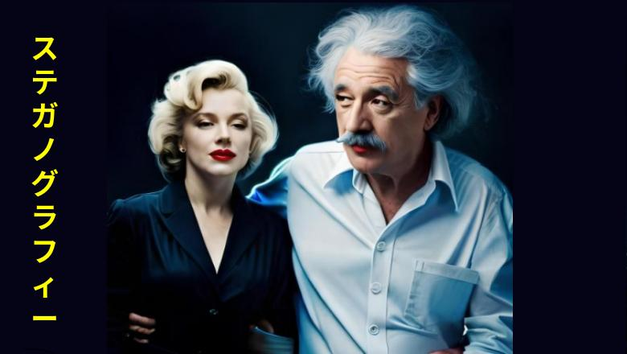
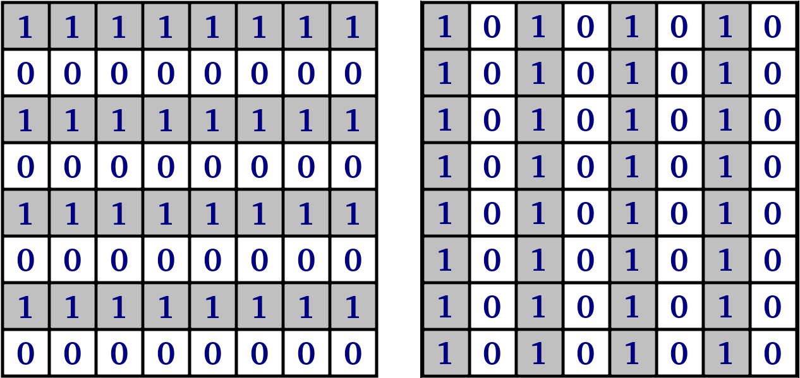
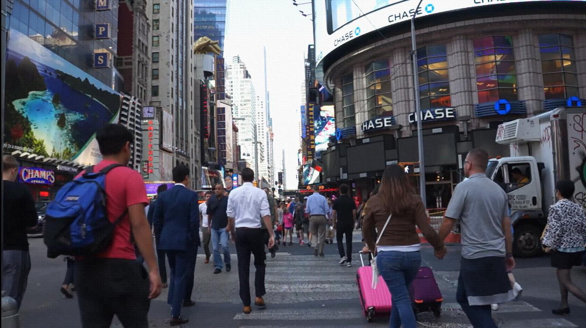

Steganographic experiments with video files and Youtube. Part-II
This is a translation of the author's own article. The
original article is published
here

Since the publication of the first article, some interesting tools have appeared to demonstrate the digital storage atypical capabilities of Youtube. For example, Infinite-Storage-Glitch utility. The author of this utility, taking advantage of the reasonable placement of digital information in black and white CV_8UC3 format, successfully used Youtube, if not as a fully fledged Dropbox, then as a prototype of an alternative file storage, which led to a lot of different inspirations and generated a lot of angry reactions from users, including ethical ones.
Perhaps the next quite obvious step in the evolution of the tool would have been to replace the
By
It should be emphasized that the nature of the author's interest in the topic in question is rooted not in a desire to misuse Youtube, which would have been, at the very least, of dubious ethical nature, but in new opportunities opening up extremely widely at the intersection of software engineering craft and sporting excitement. It was interesting to work in a situation where the loss of information is an intractable "ontological" condition in the work of steganography. This is where the focus of research interest shone with all its colours. Because it is quite boring to steganograph a file, provided it is not purposefully modified, tested by Youtube's de-masking techniques, but used only as it was prepared.
For science-based experiments Youtube is a very good place to experiment, as it represents the state-of-the-art and most advanced system for optimising video streams on an industrial scale and can very "intelligently" resist the urge to do anything with the video data beyond its primary use scenario. For example, Youtube has a multi-level validation and optimization strategy, delayed in time, and can optimize an uploaded file not immediately but in steps, using different techniques to do so.
Thus, Youtube exploits the psychovisual redundancy factor to the limit. This factor is brought to the point where the indistinguishability (weak distinguishability) of details in images to the human eye allows optimization as far as the packaging algorithms proposed by engineers and the predetermined balance between the quality and size of video data storage allow.
Therefore, the first thing to be fiercely resisted from the very first steps of the experiment is the codec's desire to get rid of small details that do not noticeably affect video quality for humans, but affect the completeness and integrity of steganography in principle. Video optimization doesn't allow using such well-known and available in steganography methods as, for example, Least Significant Bit insertion, because codecs radically "grind" colours in the image by restructuring originally formed video containers. The metadata that is transmitted with the video file is removed. These kinds of steganographic tools prove to be "fragile" or "semi-fragile" as they are fully or partially destroyed when the codecs work. Youtube algorithms inevitably lead to loss of integrity and completeness in the stored data when it comes to our technique of "pixel burn-in" in a colour image. It is almost impossible to store data efficiently in noise as well, since noise and fine textures, as already mentioned, are optimised in the first place.
Further, which caused the author of the article even more creative excitement and trepidation, the research programmer easily gets caught in the vicious circle of his engineering stereotypes. His quite reasonable and justified desire for reliable information storage leads to the need for multiple redundancy of containers. And the multiple redundancy situation creates new opportunities for data compression. This occurs when one portion of data is similar to another portion of data, as the total pool of images increases and new levels of storage and video optimisation are available.
All the above has allowed the author to maintain a high degree of research interest throughout the duration of the experiments and to actively search for various robust approaches to data storage and retrieval and to coding under the conditions of providing the requirements for noise immunity.
Ethical aspect
Although the topic has already been raised once, we believe it is worth reiterating in this new context that steganography implies working with certain information in the context of keeping the very fact of such information secret. Our situation is somewhat different. For research purposes, we do not conceal our intentions, we declare it openly by adding explanations and by placing links to the materials we use, consistent with the free and fair use of software engineering tools and technologies and all the products generated by them. All our results are open and available for reproduction, study and evaluation. Steganography artefacts are also not closed, but openly fractured. We do not mislead anyone and we respect the rights of copyright holders. Moreover, we encourage everyone who happens to be involved in our work to do the same. This work consisted of determining the depth of capability of the proposed tool to ensure the sustainability of de-masking techniques of Youtube.Utility description
The utility of the author of this article implements coding by placing in a sequence of PNG frames, into which the background video is split, conditionally hidden data by making insignificant changes in the images. The degree of "insignificance" is subjective. This degree can be adjusted, for example, by adjusting the coefficient of visual satisfaction, on the one hand, and also determined by the control of data recovery errors, on the other hand.The following steps can be distinguished in the utility's work cycle:
1) Providing the necessary redundancy in the input bitstream. The experiment uses a naive approach that implements sequential data redundancy at a certain frequency. The interpretation of input and output streams as bit channels, in our opinion, successfully fits into Go's unbuffered channel type representation. We emphasize here that Go was chosen because its concepts are well suited to stream processing and it has built-in mechanisms to ensure and control its performance.
2) Implementation of data homogeneity to ensure resistance to write corruption by mixing bytes (and, as an experimental tool, bits in bytes). Here it is a question of implementing the data whitening process — changing the byte sequence (and bits per byte as a separate option) to flatten the data distribution and remove any unwanted patterns or autocorrelations in it, primarily so that Youtube can select as few targets as possible for forced optimization based on examination of statistical properties in the data of the file taken for video-hosting.
3) At the stage of homogeneity criterion realization Stegokey — key is used as the lowest level algorithm in steganographic persistence provision, which allows to place and then restore source data over the decoded array of bytes (including individual bits).
4) Preparing to store binary information in the body of the background video file by "burning" individual pixels according to overlapping patterns. By and large, this method is equivalent to watermarking an image. It involves blending two images (a background image and one specially prepared to store binary information). An important goal is to find a balance between the quality of the blending and the guarantee of recoverability of the information. To achieve this, the tool uses three levels — "aggressive" level for video hosting Youtube, "experimental" level for ongoing experiments in finding the balance of parameters and "comfortable" level for simple steganography, but fragile to damage containers.
Two 8x8 pixel zebra patterns are chosen as the patterns for storing bits of information in the image. The size is chosen empirically. These patterns are the simplest variation on the Barcode and QR code themes.

Figure 1. Binary coding patterns for 2 classes (in the software implementation 1s are replaced by 255 for ease of blending)
One zebra is rotated 90° in relation to the other. This type of pattern has many practical advantages, such as the easy implementation of optical classification of the two classes and the high reliability of separation in demarcation under noisy conditions, which is achieved by contrasting pattern structures and redundancy.
The next step is to unroll the "carpet" of such patterns according to the encoding bitstream — sequentially covering frame by frame. The remaining volume of the last frame, in order to mask the exact size of the donor file, is filled with rubbish.
Decoding performs the reverse operation — collapsing the "carpet". This is implemented through pattern recognition in the sequence of frames pulled from the video. At first we will downloaded from Youtube video and "chewed" it up with optimization algorithms and cut it into frames as before and run the above mentioned operation for each frame.
It should be emphasized that in the quest to counter Youtube's success in optimizing videos, in a situation where the human eye can barely see the difference between frames, it is inevitable that with the addition of our artifacts, human vision will still feel the difference. So how can we help mitigate the effects of such distortion on picture clarity? The easiest method to get rid of this flaw, in our opinion, would be to encode at a higher resolution and have the user view the video below it at one level. For example, preparing video in hd1080 resolution, and viewing hd720, etc.
Experiment
Let's carry out a simple experiment to estimate visual quality of the result of mixing in WEBM hd1080 video acceptor of the donor file. As a donor was used Pushkin's novel "Dubrovsky". The parameters were chosen in such a way that the amount of information to be mixed was within the relatively acceptable waiting time of the utility.| File | Role | Size |
|---|---|---|
| dubrowskij.txt | File-donor | 143k |
| dubrowskij.txt.crp | File donor, wraped by Bose-Chaudhuri-Hocquenghem | 286k |
| new_peoplenyc1080p.mp4 | Video acceptor (back video with sound) | 6,1M |
| dubrowskij.txt.crp_filesize58435200.webm | Video for Youtube | 199M |
| dubrowskij txt crp filesize58435200 [7WhQfMocbQQ].mkv | Downloded video from Youtube, after Youtube optimisation | 62M |
| dubrowskij.txt.youtube | Recovered donor file (after basic decoding and recovery through correction code) | 143k |
Time spent on coding (without external wrappers).
| Type | Time |
|---|---|
| real | 33m0,299s |
| user | 79m26,639s |
| sys | 0m10,871s |
| Type | Time |
|---|---|
| real | 10m20,517s |
| user | 17m25,118s |
| sys | 0m12,946s |
Visually, the reader is given the opportunity to assess the results for himself or herself. Video acceptor, hd1080 (Free People in New York City Video Footage, sound by Iamazerrad)
Steganography after optimisation in Youtube repository, hd1080

Figure 2. Steganography prepared in "comfort" mode, hd1080 (not for publication on Youtube as it has a "fragile" container)
Steganography, comparison of "aggressive" and "comfortable" modes, hd1080
We can note that there are no more
Despite some success, it should still be recognized that such methods of "burning" pixels are weakly ineffective, since they do not completely remove the problem of flickering and actualize a new problem of loss of color saturation of the image. However, the "fragile" version of steganography looks almost without flaws.
ToDoList
1. Algorithms for effective error correction are not implemented in the body of the utility, but they can be easily connected via pipe or placed in a separate wrapper utility. However, in order to optimize the entire steganography circuit, it is desirable to include them in the core of the utility with options for making targeted optimization decisions.2. Unfortunately, the result of the steganography of this utility does not have cryptographic strength. However, this was not in the original plans. However, as in the previous case, the initial wrapping of the file in a cryptographic "bag" with error correction removes this task from the agenda for now.
3. Algorithmic optimization of algorithms in the Go language is still waiting for its finest hour. Now the steganographic procedure requires significant computational costs. The Go language provides a lot of convenience for refactoring code to the form when the utility can demonstrate its best sides in this aspect.
4. A more fine-tuning of ffmpeg parameters is required when assembling the result file from separate frames, since at the moment there are certain problems with video and audio out of sync. In addition, it is easy to notice that the speed of the utility depends on the performance of this library with PNG files.
5. It would be nice to dissolve meta-information about data in stored containers, including the size, file name, and checksum, write it into the body of the binary result, "smearing" it over the entire length of the file with an "even layer" and turn the storage into a kind of digital fractal form, when aggressive cutting of an arbitrary part of it entirely or by individual bits up to a certain threshold of sensitivity, ensuring integrity and completeness, would not lead to fatal quality losses. However, this task can also be technically reduced to the actions set out in paragraphs 1 or 2 of this list.
Conclusions
1. It turned out that in practice it is quite possible to "dissolve" any binary file by placing it in the body of the video file so that at the same time the embedded data can be relatively easily and unhindered to get back later with a certain guarantee.2. Our own steganographic pet craft was able to withstand the basic tests and successfully pass through all the
3. According to the results of experiments, the utility received a kind of counter-motto: long, expensive, inefficient. Therefore, the created tool cannot be used by anyone to cause any harm or significant damage to video hosting sites by turning them into analogues of a dropbox. Speaking more specifically, bitwise data processing and pixel-by-pixel image processing in a computational sense are not acceptable for industrial operation of the method as a kind of competitive alternative to file storage.
4. The implemented task opens up an even wider space for further experiments, since it allows and even targets a wide range of readers for a creative search of algorithms, processing parameters, storage, and display of video information. We hope that the combination of various algorithmic techniques, including those well described in the literature, will allow us to achieve more noticeable results in this area.
Acknowledgements
Finally the author would like to express special thanks to Andrey L. for the opportunity to discuss this tool conceptually at all stages of development and debugging. Without this support this tool would hardly "see the light at the end of the tunnel". Andrey is the author of a python script for wrapping the input file with Bose-Chaudhuri-Hocquenghem correction code, as originally intended to provide additional guarantees of file completeness and integrity. He pointed out the need to get rid of the psychovisual problem of video flicker. In addition, the author sends his thanks to Oleg B. for sending the link to the Infinite-Storage-Glitch utility and thereby reminding him to complete the second part of the work. Kudos to all Hubrovites who commented in the comments, and maybe even to those who didn't. All comments have been considered and proper conclusions drawn.Intents
A new version of steganography and all the graphics can be found on the githab. This set is still not a finished tool, but serves only as a working demonstration of the experiment. Bitmap processing is obviously not a good idea and so the optimization of the working stack is still waiting to be done. First of all, attention should be paid to the proper utilization of the CPU.At the moment the author is actively seeking opportunities to join a successful team dealing with similar or similarly popular topics to further satisfy interest in this or similar issues. Therefore, the author would be very happy to receive any reaction to the material posted. It is especially interesting if the reader is a competent decision-maker and can help with concrete steps in the author's transition from the amateur phase to the professional phase. The author will gratefully consider all suggestions for the development of the utility for any meaningful and useful purposes for society as well as the world economy.
Literature and sources for reflection
1. https://github.com/pixelomer/bin2video2. https://en.wikipedia.org/wiki/Error_correction_code
3. https://web.archive.org/web/20120905034757/http://www.eece.maine.edu/~eason/steg/SPIE98.pdf
4. https://habr.com/en/articles/358820/
5. https://github.com/rondotcomYT/Infinity-Drive
6. https://en.wikipedia.org/wiki/BPCS-steganography
Little Linux experimentation with laptop AN515-46-R70A
I wanted to install linux on my acer laptop. But my laptop
has BIOS version 1.03. In
official site
I saw that the latest version is 1.07. There is a Windows
executable file only. Looking ahead: I tried to use
wine
in Ubuntu to run this file. But it failed. Firstly, I had to
install Windows. But which USB boot solution is chosen? On
the advice of my friend, I have chosen
Ventoy. As it turned out, the BIOS firmware should reboot in DOS
mode without the Windows environment. It was funny. After
Ventoy prepared the flash card on Ubuntu, it looked as
empty, but it was bootable. I saved the ISO Windows and
Linux files for the installations to the flash drive through
a simple copy operation. After these manipulations, I
started experimenting. I downloaded the new versions of
Endless OS, Linux Mint, Ubuntu and Manjaro. I read that
someone sells a laptop like mine with Endless OS. Therefore,
I hoped to install this operating system successfully. But
it failed. This OS is not even started. Then I successfully
started Manjaro. I really like this OS. This operating
system is very ergonomic and functional. But I saw it not
worked with my Wi-Fi device. I connected to LAN and did not
see the problem in time. There are many options for choosing
a Linux kernel in Manjaro. I have chosen version 6.0.0, but
Wi-Fi didn't work yet. Linux Mint has the similar problem.
Besides, the web camera didn't work either. I decided to
stop on Ubuntu. Because, the Wi-Fi worked well.
Conclusions
| Linux | Endless OS | Linux Mint | Manjaro | Ubuntu |
|---|---|---|---|---|
| ISO | eos-eos4.0-amd64-amd64.220406-204708.base.iso | linuxmint-21-cinnamon-64bit.iso | manjaro-kde-21.3.7-220816-linux515.iso | ubuntu-22.04.1-desktop-amd64.iso |
| Mediatek MT7921 WiFi | No information | Not working | Not working | Working |
| Internal web camera Quanta ACER HD User Facing | No information | Not working | Not working | Not working |
| External web camera Sunplus Innovation Aukey-PC-LM1E | No information | No information | No information | Working |
Longest Substring Without Repeating Characters
/*
#----------------------------------------------------------------------------------------------#
# #
# version 0.0.1 #
# https://leetcode.com/problems/longest-substring-without-repeating-characters/submissions/ #
# #
# Aleksiej Ostrowski, 2020 #
# #
# https://aleksiej.com #
# #
#----------------------------------------------------------------------------------------------#
*/
#include <string>
#include <iostream>
int max(const int a, const int b) {
if (a > b) return a; else return b;
}
class Solution {
public:
int lengthOfLongestSubstring(std::string s) {
auto len_s = s.length();
if (len_s <= 1) return len_s;
std::string t;
int max_len = -1;
int i = 0;
for (;;) {
auto found = t.find(s[i]);
if (found != -1) t = t.substr(found + 1);
t += s[i];
max_len = max(max_len, t.length());
std::cout << "i = " << i << " s[" << i << "] = " << s[i] << " max_len = " << max_len << " string = " << t << std::endl;
if (++i >= len_s) break;
}
return max_len;
}
};
int main() {
// std::string s = "aabac"; // 3
// std::string s = "pwwkew"; // 3
// std::string s = "bbbbb"; // 1
// std::string s = " "; // 1
std::string s = "aab"; // 2
std::cout << "input " << s << std::endl;
auto S = Solution();
std::cout << S.lengthOfLongestSubstring(s) << std::endl;
return 0;
}